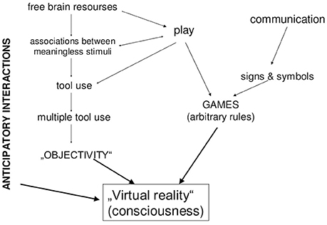

If is conscious, then there is an experience of what it is like to be
What does it mean to be conscious? Is consciousness emergent from matter? Or is it something else entirely (the ether or the soul)?
“Consciousness is always consciousness of something, and when the object is subtracted, nothing remains to be characterized” (cannot be of independent origin, emptiness)
See also: Hard problem of consciousness, The Upanisads, qualia, self-knowledge, Primacy of Consciousness, Nagel’s Bat Argument
Types of consciousness:
- Phenomenal consciousness (felt consciousness) vs Access consciousness
- Gross consciousness (obvious waking state) vs Subtle consciousness (sleep/deep sleep). In more Indian philosophy, consciousness is that which is luminous (revealing) and has capacity for cognition.
Theories of consciousness
- Cognitive Theories: consciousness is based in areas that are devoted to cognitive processing (thinking, reasoning, evaluating, memory, etc.)
- Global workspace theory: consciousness arises from highly coordinated, widespread activity in the brain
- When signals are broadcast to the global workspace, we become conscious of the sensation
- When they remain localized, they are not perceived consciously
- Global workspace theory: consciousness arises from highly coordinated, widespread activity in the brain
- Sensory Theories: consciousness is based in areas that are devoted to sensory processing
- Block argues that recurrent processing in sensory areas is the NCC for phenomenally conscious perception
- e.g. Neural Correlates of Consciousness (NCC)
- First-order theories: consciousness is a product of the cognitive processing of sensory information
- Higher-order theories: consciousness involves something done to build on that cognitive representation of the sensory experience
Minimal Phenomenal Experience1
Dreamless sleep experience is a candidate for this
Background phenomenologies claim these experiences combine
- minimal dimensionality (of awareness)
- maximal prototypicality (overlap with other states/modes of awareness)
If we find a minimal form of phenomenal experience in all forms of phenomenal content and underlies all conscious experience, then this model would amount to solving the problem of consciousness
Problems for interpreting reports of pure awareness in meditative experience
- Embodied theory contamination: background theoretical assumptions strongly condition personal beliefs and thus processing and reporting
- Conceptual consistency: how does one interpret words like “perceive”, “luminous”, “radiant” in reports of experiences that are supposed to be “contentless”
- Performative self-contradiction: “I experienced a selfless state” is a self-contradictory
Problems with information theories of consciousness
Frontiers in Systems Neuroscience
Two main camps
- Radical behaviourists: all talk of the mind could be translated, without scientific loss, into talk about behaviour
- Cognitivists: all talk of the mind (including consciousness) could translated, without scientific loss, into talk about information processing
Cognitivists
Theories that equate consciousness with information or information processing are dualist in nature
Chalmers (in The Conscious Mind: in Search of a Fundamental Theory) defines information in the actual world as having two aspects
- Physical
- Phenomenal
However, information is usually defined at odds to this
- Information is often used to refer to non-mental, user-independent, declarative semantic contents, embedded in physical implementations (Floridi, 2005)
- Important distinction: Physical things encode and embed information but themselves are not information
- James Joyce’s copy of Dante’s Inferno may carry information, but it is not itself information—it’s just an arrangement of paper and ink
- Your brain when he looks at an octopus may encode information, but it is not itself information
- An objective (mind-independent) entity… information can be encoded and transmitted, but the information would exist independently of its encoding or transmission
Seriality/stream problem
- While the brain works as a parallel distributed network with virtually unlimited resources, conscious events appear consecutive and momentary capacity is strongly limited. Multi-tasking is notoriously hard. Theories regarding consciousness as a particular case of brain information processing must suggest a specific mechanism for creating serial processes from a collection of parallel ones
- Not a problem for behaviour-based theories as behaviour is a series of agent-environment interactions. Attention budget, more complex behaviours take more bandwidth and thus require more focus (need to be done in serial). Things can be trained to reduce focus needed (e.g. walking and talking)
Problematic: thermostats (for example) clearly carry information, but are not widely regarded as having any degree of consciousness
Chalmers has two options:
- Perhaps only some kinds of “physically realized information spaces” are conscious.
- Perhaps thermostats are conscious (option that Chalmers chose). Suggests that “the level of organization at which consciousness “winks out” might be lower than a thermostat but higher than a rock.”
Tononi’s Integrated Information Theory of Consciousness (IIT)
- Resolution to this problem is choosing that only integrated information is conscious
- IIT does not even answer this question directly, only correlating the two and correlation is most definitely neither definition nor causation: “To recapitulate, the theory claims that consciousness corresponds to the capacity to integrate information”
- See also: Consciousness is not Information
Behaviourist approaches
Boris Kotchoubey in Frontiers in Psychology
Human consciousness emerges on the interface between three components of animal behaviour:
- Communication
- Play
- Use of tools
Behaviour, in this context, is a biological adjustment by means of movements and all kinds of movement-related physiological activity
Communication and play yields symbolic games and, more importantly, language
Interaction between symbols and tools results in human praxis
Life is a continuous battle against the second law of thermodynamics. All organisms’ needs can be subsumed as a need in negentropy
- Play: Play, therefore, introduces something that can be called “second reality” (Vygotsky, 1978). In this reality the life is going on as if it is the “primary reality,” but with the nice difference that whenever I don’t like what happens, I simply stop the process and go out, or start it anew. This makes play suspiciously like consciousness
- Tools: A stick is eventually manipulated “just for fun,” and then, suddenly, it turns out to be useful. Thus no animals unable to play can use tools.
- Communication: behaviour whose main effect is changing the behaviour of another animal

Consciousness is then the simulated or potemkin village of reality. In words of Karl Popper, instead of dying as a result of our errors, we can let our hypotheses die on our site (Popper, 1963).
We do not consciously think (construct this virtual reality) all the time. Consciousness is the capacity to consciously think (telerobotics vs telepresence)
Footnotes
-
This content is sourced from Professor Evan Thompson’s course materials for PHIL451A at UBC. All rights to this content is retained by Evan Thompson. ↩